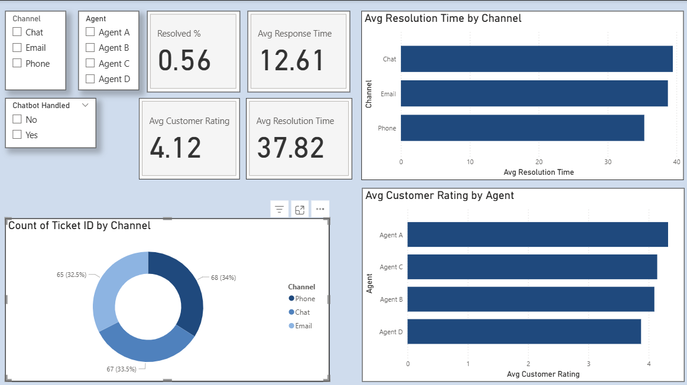

Customer Experience KPI Dashboard
A case study in analytics, visualization, and actionable insights
This interactive Power BI dashboard analyzes customer support metrics to help leadership monitor team performance and customer satisfaction trends. It demonstrates how data visualization can streamline operations, provide actionable insights, and enhance decision-making.
🎯 The Challenge
Support teams tracked KPIs in silos, making it difficult for leadership to see the full picture. The challenge was to build a dashboard that consolidated resolution speed, customer satisfaction, and bottleneck analysis into a single report.
🛠️ The Process
- Used Power Query to clean and transform raw ticket data.
- Built DAX measures for KPIs like resolution time and customer rating.
- Designed a layout that balanced high-level KPIs with detailed drilldowns.
- Tested multiple visuals to ensure readability and consistency.
📊 The Solution
Key Features:
- KPI Cards → % resolved, avg. response time, avg. resolution time, avg. customer rating
- Bar Charts → Agent performance comparisons
- Donut Charts → Ticket volume by channel
- Slicers → Filter by agent, channel, chatbot usage

Sample dashboard visualization (synthetic data)
🔑 Key Insights
- Phone support resolved tickets 15% faster than email.
- Agent A achieved the highest satisfaction score: 4.32 / 5.
- Chat requests had the longest resolution time (39.56 hours).
🚀 Impact
Even with synthetic data, this dashboard shows how centralized reporting can save leadership hours of manual reporting weekly, while enabling data-driven decisions for team training and resource allocation.
🧰 Tools Used
- Power BI (visualization & data modeling)
- DAX (custom metrics)
- Power Query (ETL & transformations)